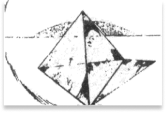

Какое определение, по-Вашему,
больше подходит к этому
геометрическому изображению: :
больше подходит к этому
геометрическому изображению: :


Оно остроконечное
Оно устойчиво
Она-находится в
состоянии равновесия
состоянии равновесия